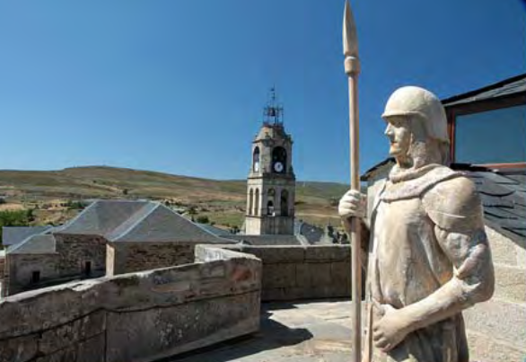
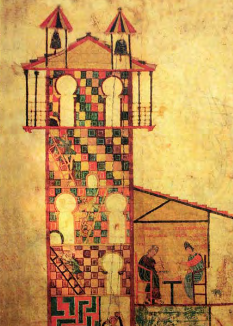

|
Las primeras huellas de presencia humana datan de la remota Edad del Bronce, tal y como lo atestiguan las pinturas rupestres localizadas entre Linarejos y Villarinode Manzanas en las covachas del Portillón y el Canchal del Melendro, descubiertas por Ramón Grande del Brío. Ambas manifestaciones están declaradas como Bienes de Interés Cultural Más tarde, en la Edad del Hierro, numerosos grupos humanos se asentaron endiversos lugares con el objetivo de extraerel mineral del hierro. Aún hoy podemoscontemplar algunos restos de aquellasactividades. Nombres de algunos pueblos,y otros topónimos, (Ferreras, San Pedro delas Herrerías...) son la prueba de la exis-tencia de aquella actividad metalúrgica. Los castros, localizados en las cumbres,son otro testimonio histórico de granimportancia, cuyos restos son visibles enla actualidad cerca de algunas localidadesde la Sierra como Riomanzanas, Ferrerasde Arriba y de Abajo, Villardeciervos, etc.Fueron, casi con toda probabilidad, ungrupo perteneciente a los Astures los queconstruyeron estas fortificaciones, siendosu ocupación principal la ganadería juntoa actividades relacionadas con la fundición del hierro y la obtención de carbón de leña De la época de la romanización nos quedala referencia de la calzada romana que unía Braga, en Portugal, con Astorga (laVía XVII), utilizada fundamentalmente confines militares. De igual forma, en un lugarimpreciso, en el entorno de San Pedro delas Herrerías o de Figueruela de Arriba sesabe de la existencia de la Villa romana de Veniatia. La edad Media nos dejó en estas tierras ejemplos notables del arte románico, des-tacando la Iglesia de Santa María, enTábara, con su Scriptorium alojado en lamagnifica torre, donde los monjes ilustra-ron en el año 968, entre otros, el valiosoBeato de Tábara, hoy en el ArchivoHistórico Nacional. De esta época es tam-bién el templo parroquial de NuestraSeñora del Azogue, en Puebla deSanabria. De la segunda mitad del S. XVfue la construcción del Castillo de losCondes de Benavente en la misma locali-dad de Puebla, sobrio ejemplo de este tipode construcciones defensivas. Para más información, visitar: Wikipedia |